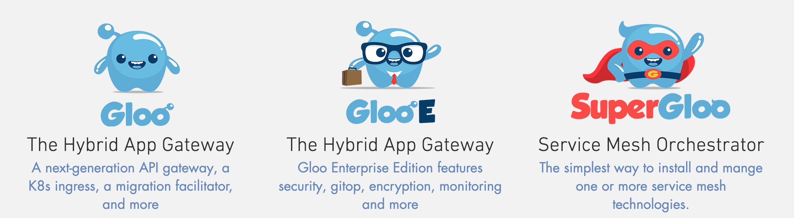
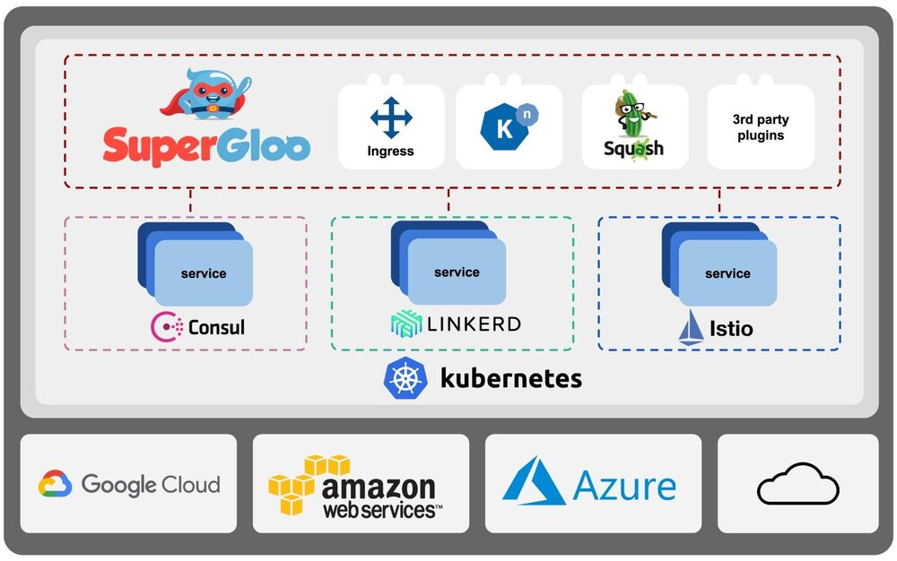

笔者2017年就曾注意到 solo.io 这家公司，它的创始人 Idit 曾在 KubeCon 上分享过 Squash，去年11月推出了 SuperGloo 服务网格编排器再起吸引了我的注意，但最重要的一件事是，Christian Posta 于2018年1月3号宣布加盟 solo.io，这让我很惊讶，我原以为他会加入 T 公司。
Idit Levine 现为 solo.io 的创始人，这是一个很小的 base 在马塞诸塞州剑桥市的创业公司，这家公司致力于云原生的混合云解决方案。曾是 EMC 云管理部门的 CTO，也是其全球 CTO 办公室的成员，她专注于整个堆栈，微服务，云原生应用和 PaaS 的管理和协调（M＆O）。当她加入 DynamicOps（vCAC，现在是 VMware 的一部分）作为其首批员工之一时，Idit 对云产生了浓厚的兴趣。 随后，她参与了 Verizon Terremark 的下一代公有云的开发，并担任 Intigua 的代理 CTO，Intigua 是一家专注于容器和管理技术的创业公司。
Christian Posta，前 Red Hat 架构师今年年初刚刚加入 solo.io，成为 solo.io 的 Filed CTO（负责售前、售后与布道的首席架构师），详见 New Adventure Starts at solo.io。
2018年11月22日，Idit Levine 宣布可用于管理和编排大规模服务网格的 SuperGloo 开源。无论是在本地、云上还是在任何拓扑上使用（或计划使用）单个网格或多个网格技术，SuperGloo 都是一个良好的抽象层，它可以简化服务网格的安装、管理和操作。
Solo.io 这家公司有一系列项目，其中有三个都以 Gloo 命名，这些都是与 Service Mesh 相关的。

还有一些列开发者工具。
关于 Solo 的开源项目请查看 https://github.com/solo-io。
服务网格是云原生应用的未来
服务网格是处理服务间通信的基础设施层，使应用程序无需了解复杂的通信网络。服务网格提供的高级功能有加密、身份验证和授权、路由、监控和跟踪等。
云原生态系统中服务网格的采用正在迅速增长，有几个令人兴奋的产品。领先的服务网络包括 Istio，由 Google、IBM 和 Lyft 支持；Linkerd 和 Linkerd2（前身为 Conduit），CNCF 项目；以 及 Hashicorp Consul 新的 Connect 功能。每种服务网格技术都有自己的特点和优势。
SuperGloo 的特点

图片来自 medium
根据 Idit 的描述，SuperGloo 可以让你最大化服务网格的优势同时还可以减少其复杂性。
SuperGloo 有以下特点：
- 帮助用户快速获得服务网格的经验
- 接管服务网格中的一些关键功能
- 统一了 Ingress 流量（南北向）和网格流量（东西向）的管理
- 为自由组合任何服务网格和 Ingress 打开了大门
SuperGloo 的愿景
作为服务网格的编排器，它为用户自由组合任何服务网格开启了方便之门，SuperGloo 也承载着 Solo 这家公司的愿景：
- 使用户可以在不同的服务网格间迁移
- 统一的用户体验，是用户可以使用同样的工具管理不同的网格
- 不同服务网格之间的粘结剂，让它们可以自由与其他网格连接在一起
以上内容部分引用自 Idit Lavine 的博客 Introducing SuperGloo: The Service Mesh Orchestration Platform，关于 SuperGloo 的更多信息请访问 https://github.com/solo-io/supergloo。